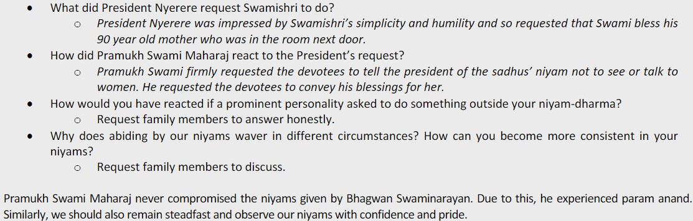

Gharsabha can be done for about 15-30 minutes.
1. Jainaad and Stuti (Shrimad sadguna shalinam chida chidi...)
2. Dhun: Swaminarayan Swaminarayan...
3. Prasang Vanchan:
4. Discussion:
5. Sankalp Dhun:
-For the well-being of Param Pujya Mahant Swami Maharaj, sadguru santo, santo, and haribhakto.
-Prayers for onself can also be included.
6. Click 'Videos' to watch the Guruhari Darshan.
7. Purnahuti Shlok (Gunatitam Gurum Prapya...)
Lastly, a family activity can be done by playing a game available around the house. (Optional)